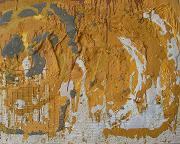
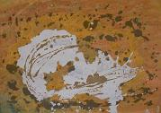

Art Exhibition at Strovolos, 2008
Solo Art exhibition
June 23 to 25, 2008
Strovolos Town Hall, Nicosia, Cyprus
Haris Paspallis presents, views of the earth from above, with the soil as it is, in the form of mud and clay in wall constructions, in a digging of mixed media – fabrics, clothes, rugs, wires and cardboard- and as a subsequent liquidation, which in its volcanic form, draws shapes, forms and contour.
This aerographic visual amalgam while it’s abolishing the boarders of countries, seas, nationalities, languages and cultures, it often brings confusion and division of identity- individual and collective – between local and interstate particularity and globalization.
Through the unifying, trascendal, dimension of the works comes the redemptive cleansing, in a libation of atonement to the primordial mother-earth which reproduces with an almost sculptural or embossed mood, in all the intensity of its dried areas, through the summer heat and drought, through its burned plains, suffocating in the dark, grey shades and the wire meshes of fire destruction waiting for their life-giving encounter with the water.
In a perpetual succession of life and death, the artist contrasts with the texture of rough infertility, areas of irrigated fields, euphoria and fertility, in a thank you statement, for the great gift of fruition and ultimately life itself.)

80x100 mixed media |

80x100 mixed media |
 80x100 mixed media |

80x100 mixed media |
 60x80 mixed media |

60x80 mixed media |

70x50x20 installation |

70x100 mixed media |

80x100 mixed media |